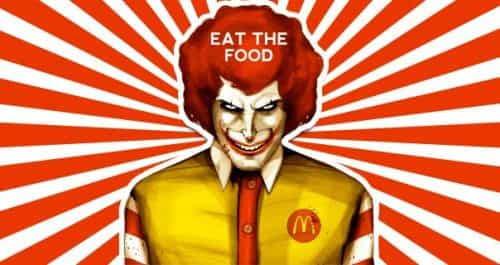
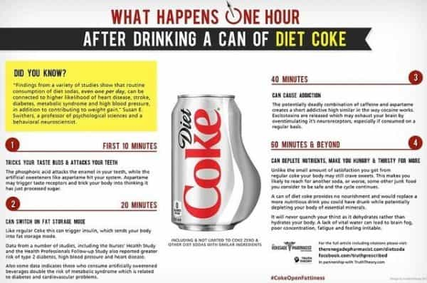

Jared is a middle-aged guy full of old-man wisdom. He's best described as a gentlemen scholar and a man among men. You can read his writing at his site: Legends of Men


Take a look at this Diet Coke commercial:
I saw it before the previews of a movie last time I took my wife out on a date. The message in it was so blatantly harmful to people, and yet so representative of our consumer culture, that I was astounded. In the 90 seconds the commercial lasted I recognized just about everything wrong with American culture.
The tagline of this commercial is; Diet Coke tastes good, so if you want one, just have one. The words are about diet coke, but the message is about giving in to your temptations. This is the first time I’ve seen an ad be so blatant about what it wants you to do.

Americans are overweight, to put it nicely. Even those that are not overweight are probably out of shape. Some of the most common pieces of advice for losing weight and getting in shape are to stop drinking sugary drinks (which includes drinks with fake sugar, like diet coke) and to cut out sugar generally. This is obviously bad for Coca-Cola’s business.
Their solution is to validate the unhealthy part of your conscious that wants to give in to temptation. When your gut tells your brain you want a sweet drink, and your brain tells your conscious to rationalize why you should get a sweet drink, and the commercial validates what your conscious tells you, it’s going to take a lot of willpower to resist that.

Once you give in to that, why stop there? You want to eat an entire pizza, just eat it. You want to sleep 14 hours, just sleep in. You want to cheat on your spouse, just do it. Nobody ever tries to stop you from eating something healthy, like a banana. You want a banana, just eat a banana. We already do that. It’s not necessary to say that. A statement of “you want… just have….” is a statement intended for things that are bad for you. This is what Coca-Cola wants you to do; give-in to those things that are bad for you, like Diet Coke.
If you give in to that temptation you’ll have every reason to give in to the opposite type of temptation. If you don’t want to do something, don’t do it. Exercising hurts, so don’t do it. Going out on a date means risking rejection. You don’t want that, so don’t do it. Starting your own business will increase your stress level, don’t do it.
This is where a lack of willpower leads
Nearly every way men better themselves today involves fighting those temptations with pure power of will. It gets easier over time, but when you start it’s quite a challenge. Diet Coke knows that and wants to make it harder for Americans to fight those base urges.
Whoever cast this commercial did a great job at finding the perfect representation of everything wrong with relatively attractive girls. She’s pretty, but her resting bitch face and know-it-all expressions make her very unattractive. Her speech is smarmy. She’s the sort of girl who looks down on you for not already doing what she is advising yet also looks down on you for taking her advice. She’s the type that really wants to work yurts into her statements so that she can feel smart.
She did her hair as if she wants to be attractive but walks around with an expression of “I’m so over this.” Her clothes look like a New York fashion designer tried to put an attractive outfit on a girl, yet no man finds her appealing in those clothes. Put the whole package together and she reeks of a women’s studies college girl who thinks she knows more than you and hates you for it.
There’s a thing that young people do that I’ve noticed more and more. Before any statement, they say “I mean.” So in the commercial, she says something like, “I mean if you want to run a marathon, run a marathon. I mean, if you want to drink a Coke, drink a Coke.” (As if those two actions are even remotely similar). “I mean” hasn’t replaced “like,” which is still used to the point of annoyance, it has been added to it, making college types worse than ever.
She is feminism in a nutshell. If she changed her attitude and wore feminine clothing she’d be a solid eight. But because of everything I just stated she’s so low on the scale, I wouldn’t give her the time of day (and I’ve had some low points in my early days, believe me).
Men have a share of the blame for women like her. It’s because men today are so weak that women like her are allowed to tempt society with vices and walk around with snarky, high-and-mighty attitudes.
In a sense, our collective efforts to better ourselves must be working. Why would they so blatantly appeal to your animal urges? They used to hide these sorts of messages in their ads. That’s not strong enough now. People have exercised their will-power muscles to the point where businesses feel it. Now they don’t sell you a product, they combat your power of will. It’s the next battle we fight against consumerism but strengthening your willpower is it’s own industry too, so at least there’s some economic incentive for people resisting their temptations.
For more from Jared Trueheart on the roles of men and women in literature and film check out his writing at Legends of Men.
Read More: The Downfall Of Every Diet